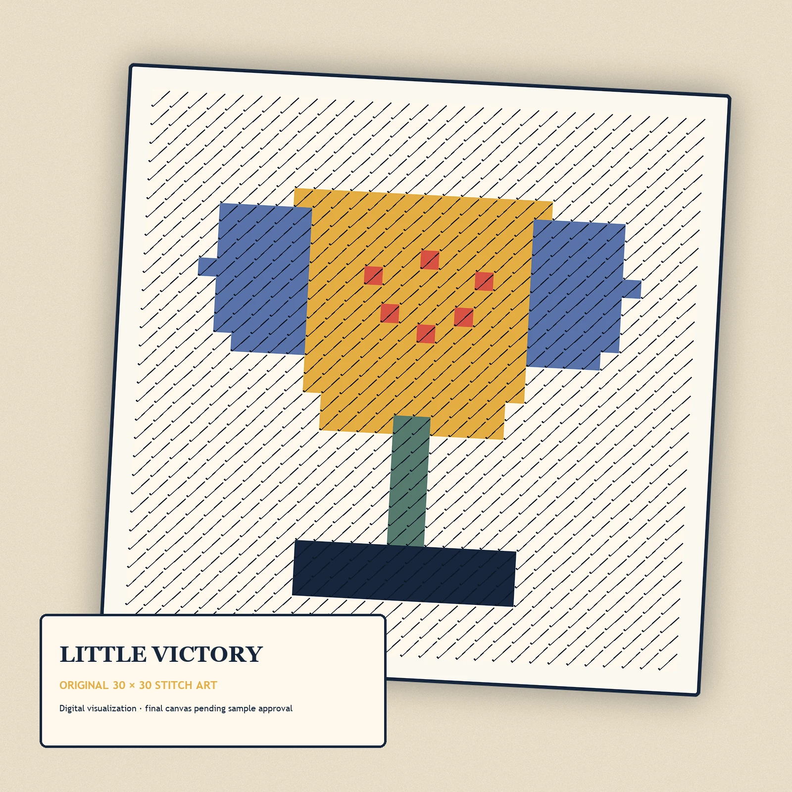
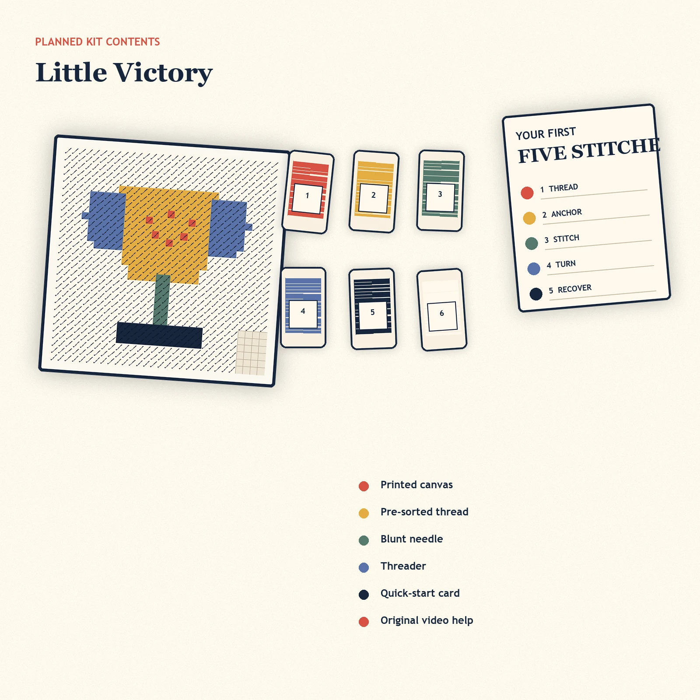

Celebration project
Little Victory First Stitch Mini
A small trophy stitched for promotions, fresh starts, and wins worth keeping.
$39.00 USD
Pre-launch preview. This product is not for sale until its sample, material, cost, safety, and ship-date gates pass.
Join the founding dropFinished sizeApprox. 3.5–4 in
MeshPlanned 10–13 mesh
ThreadPlanned cotton or wool; pre-sorted
Colors5
ExperienceNone
Completion timePublished only after novice test
FinishingSelf-finishing format
SafetyAdult use; contains a blunt needle
Mark the win by making something with your hands. Little Victory is an original mini trophy design planned for a true beginner: a short color list, one core stitch, and a format that does not require professional finishing.
The complete-kit plan includes a printed 10–13 mesh canvas, pre-sorted thread with learning-room overage, a blunt tapestry needle, threader, quick-start card, and original video help.
- Skill level: true beginner
- Prior experience: none planned
- Finished design: approximately 3.5–4 in
- Colors: 5
- Core technique: one diagonal tent stitch
- Age positioning: adult craft kit; contains a needle
Pre-launch note: this listing remains draft until the physical sample, material quantities, and beginner test pass.